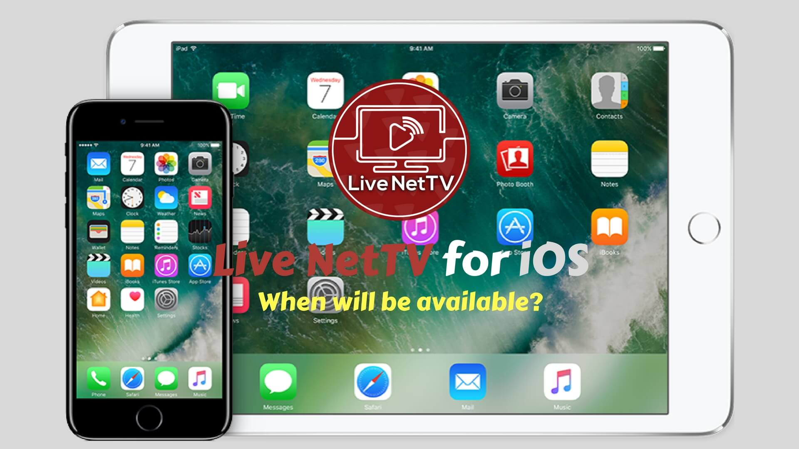

Live NetTV on iOS will be the best Live TV Channels Streaming App with more than 900+ Channels divided into 20 popular categories. Currently, the app has millions of users. Some of the Channels available are CBS, BTSport, Sky Sports, Amarin HD, FOX News, ABC News, Disney Channel etc.
Any device such as iPhone and iPad that runs on iOS won’t be able to use the app since it is under development. Yes, you heard it right. The Live NetTV App on iOS isn’t available right now.
Many of my users have asked, “When will be available?”. According to a confidential source, the Live NetTV team is under the process of building the iOS version of the app which might be released in the mid of next year. Yet, the source also said that “The App might not see the daylight” if the development isn’t successful.
We are pretty sure that if the app arrives on it will definitely become a massive hit among the apple community. Until then lets hope for the best. Why wait till the Live NetTV arrives try our other installation on other various devices and platforms too.
Hope I was able to provide the answer to what you came for. Subscribe to our notification to get an instant update when LiveNetTV on iOS is released. Till then you can ask your doubts or get clarity about the app by dropping the comments below.
Leave a Reply